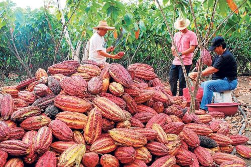
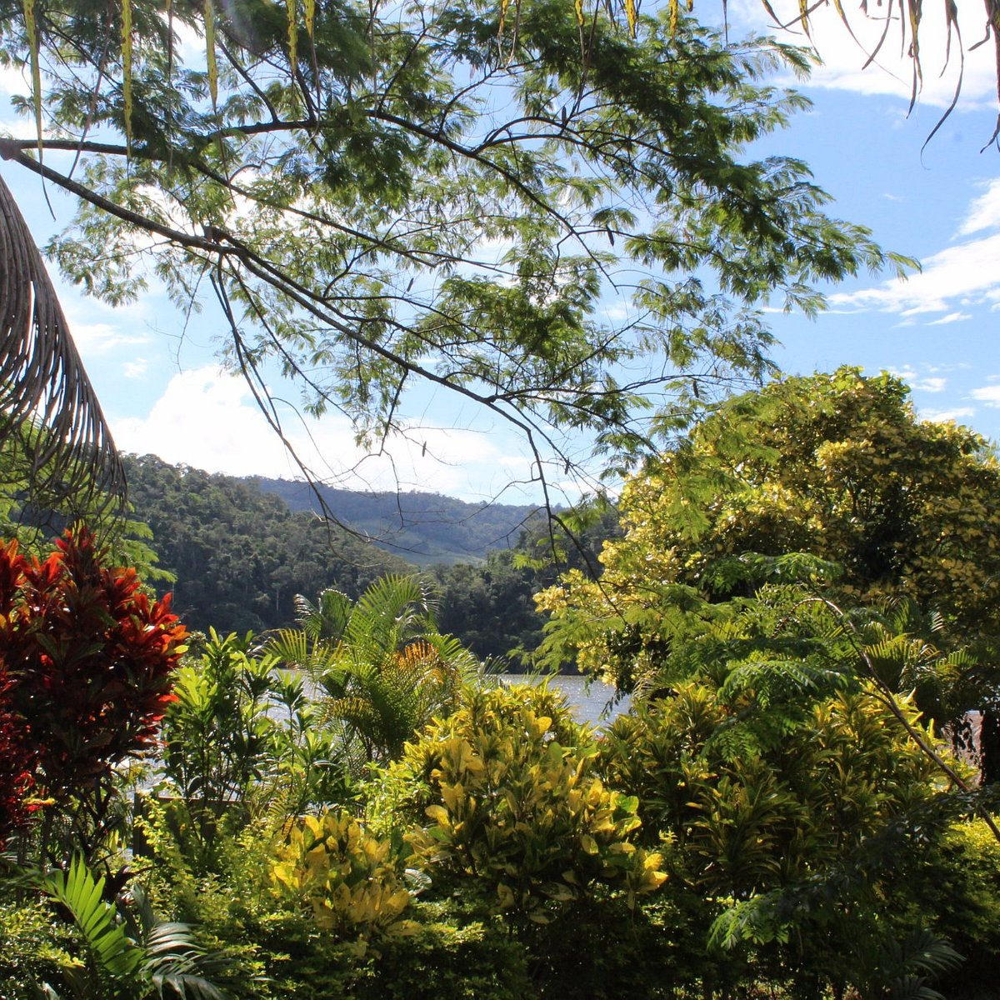

San martín posee una riqueza geográfica querepercute claramente en su desarrollo económico al ver la interacción de los habitantes y empresascon el medio. Algunas de las actividades económicas principales en la región son:
Agricultura: En este rubro se encargan de la producciòn de Arroz, Cafè, Plàtano y Cacao
Ganaderìa: Vacunos- Producciòn de leche y carne de res
Turismo: La entrada de turistas hacìa paquetes planeados por las empresas con diversas actividades y visitas a lugares de la zona
Agropecuario: Se enfoca en la producciòn de la parte de agroindustria y procesos con la materia prima agrìcola y ganadera, como él algodòn y tabaco, entre otros
Ganadería: La ganadería Vacuna es primordial para el desarrollo sostenible.

Factores de producción
Concepto
En breves términos, esto alude a aquellos aspectos que dispone la región para, en combinación, lograr desarrollar bienes y servicios que sustenten la economía. A continuación veremos algunos de estos en la zona a estudiar
Recursos naturales
Sobre sus recursos, podemos hablar que tiene una naturaleza y posición idóneas para el desarrollo, siendo el principal productor a nivel nacional de cacao (41%), café (25%), arroz (23%), palma aceitera (48%), palmito (42%), y plátano (19%). Es destacable también la gran presencia forestal que abarca, siendo de ese mismo modo vital para la industria maderera y sus productos derivados en el Perú.
Trabajo
Asimismo, los trabajos en San Martín se inclinan más por el uso de mano de obra calificada en labores agrícolas y forestales relacionadas. Aquí contamos con un gráfico del índice de empleo formal en empresas privadas de San Martin de la Plataforma Digital ünica del Estado Peruano, donde vemos la taza de crecimiendo del empleo formal a lo largo del 2022.
Capital
La región de igual forma dispone de capital para sus actividades, como las maquinarias necesarias para los procesos agrícolas y agroindustriales, paral a extracción, procesamiento, manufacturación, etc. Por otro lado, se aprovechan los espacios para la construcción de carreteras, puertos, o centros de almacenamiendo para agilizar la producción y transporte de los bienes
Capacidad empresarial o emprendedora
Para finalizar este punto, se cuenta con la gestión conjunta de los recursos por parte de los empresarios y emprendedores varios que hay; estos hacen inversiones en nuevas tecnologías, métodos, diversificación de productos, y exploración de mercados para hacer fructífero el desarrollo económico.
Lugares turísticos
Lugar turístico
¿Por qué es turístico?
Imagen
El Castillo de Lamas
Este lugar es turístico por la historia y relación con la comunidad de Lamas, esta es muy fascinante y trata acerca de Nicola Felice un empresario italiano soñaba desde pequeño vivir en un castillo y cuando llegó a Lamas vio en esta ciudad la construcción de sus sueños. En un inicio él creó este castillo para usarlo como su hogar por eso pensó en la ubicación en una enorme colina rodeada por extensos paisajes. Después de unos años él decidió compartir el lugar con los ciudadanos de Lamas y con los turistas que querían conocerlo, de esta forma aumentó el turismo en la zona.
También, el hecho de su cercanía a tan solo media hora de Tarapoto por carro lo hace accesible y económico para los turistas. Además, es poco usual poder encontrar un castillo en plena selva peruana lo cual lo hace más especial.
La Catarata de Ahuashiyacu
Su nombre significa “agua cantarina”.
Este lugar es turístico porque como es fuente de vida para diversos tipos de plantas tales como helechos u orquídeas y diversas especies de árboles, genera que esta catarata parezca un entorno muy mágico y hermoso. Además, este ecosistema atrae una gran variedad de mariposas y al muy conocido gallito de las rocas que es considerado ave nacional. Por ello, muchos turistas se sienten atraídos debido a su diversidad y por la gran facilidad que este lugar permite para el buceo o nadar.
La Reserva ecológica Santa Elena
Este lugar es turístico por muchas razones, primero, este es un lugar privilegiado de visitar y conocer porque se encuentra en una Zona de Conservación y Recuperación de Ecosistemas y es el hábitat natural de muchas especies; segundo, como es una reserva natural alberga una diversidad de especies muy hermosas, cuenta con especies de aguaje y renacales. Además de que en el paseo en bote los turistas pueden ver más de cerca y interactuando entre sí ya que este es su ecosistema natural. Es un bosque natural con apariencia de pantano pero cuenta con espejos de agua pero vivir la experiencia de visitarlo es muy mágica y épica por el nuevo entorno al que nos adentramos.
Taytamaki Parque de Aventuras
Este lugar es turístico por diversas razones ya que le permite a los turistas realizar diversas actividades que son divertidas de experimentar con amigos o familia.
Está ubicado en las alturas de la ciudad de Tarapoto, por lo que les da a los turistas una bonita vista.
Tiene un mirador en forma de mano en el que se puede contemplar los árboles y la vegetación a su alrededor.
Cuenta con deportes extremos que producen mucha adrenalina en los visitantes.
Alberga una variedad de animales debido a sus buenas condiciones en cuanto a vegetación.
Ecoparque La Soñada
Este lugar es turístico porque es un Centro Ecológico de Esparcimiento e Investigación con vocación conservacionista y un gran interés en plantas medicinales. Por ello es que los visitantes recurren a estos lugares para poder conocer acerca de las propiedades de dichas plantas. Además, los visitantes muy interesado en la naturaleza les conviene este lugar por su diversidad.

Laguna sauce
Es turístico porque se puede practicar la pesca deportiva, natación y otros deportes acuáticos, además produce espejo en el agua lo cuál da una muy maravillosa vista a los turistas.
Gobierno Regional(manejo económico)
Este punto alude a la administración y empleo de los recursos disponibles por parte de las autoridades en el contexto de la zona, en este caso el gobierno regional sanmartinense.
Actualmente, el gobernador Walter Grundel Jimenez, anunció en La Primera Audiencia Pública de Rendición de Cuentas 2024, que San Martín cuenta con más de 2 mil 284 millones para proyectos en la región, como lo son los siguientes:
Carreteras: En lo que va del 2023 y 2024, se utilizaron alrededor de 421 millones de soles, destinados para el mejoramiento de 155 kilómetros de vías departamentales y vecinales, beneficiando a los pobladores, el desarrollo y conectividad en la región.
Salud: Se ha visto fortalecida a través de 2 proyectos realizados, como por ejemplo “San Martín sin anemia” reduciendo 4.9 puntos porcentuales en la anemia entre niños de 6-35 meses de edad en 2023. Además, se muestra el compromiso reforzado con la Aprobación de la Política Regional de Alimentos Fortificados al 2026 y que además, se lanzará al mercado un arroz fortificado.
Turismo: En 2024, los sitios turísticos como La naciente del río tioyacu, las aguas termales de San Mateo y la catarata de Ahuashiyacu, han reportado un crecimiento del 0.49% en turistas extranjeros. Además, con un 66%, se ha implementado una red de protección al turista para asegurar su comodidad, confianza y seguridad.
Empleo: El gobierno de San Martín, viene impulsando la empleabilidad en la región, además, con el Centro de Empleo, se brindó asesoría para la búsqueda de empleo, beneficiando a más de 15 mil personas. Por otro lado, el Centro Integrado Formaliza Perú, realizó 3 expoferias en Moyobamba y Tarapoto para fomentar, impulsar y apoyar el emprendimiento, donde la mayoría de los productos eran realizados por los internos penales del INPE. Además, promoviendo el trabajo formal, se han emitido más de 16 mil registros para acreditarlos y estos gocen de sus beneficios.
Rol de los agentes económicos para garantizar el desarrollo del mercado y el comercio regional
Primeramente, en toda sociedad hay miembros, cada uno con un rol en particular a cumplir, y es aquí donde entramos a los agentes. Hay 3 actores principales:
Familia: Conjunto de personas que son los consumidores.
Empresas: Proveedores y distribuidores de productos, y encargados de la interacción con el medio o zona y recursos.
Gobierno regional o estado: Reguladores de los otros 2 entes con respecto al comercio y uso de recursos.
La familia en San Martìn se encarga de lo que es el consumo de los productos, en este caso, se reporta que los màs adquiridos se refieren a productos de fabricaciòn y obtenciòn local, como el cafè, Cacao, plàtano, entre otros. Se encargan de el consumo de productos regulados por el estado y producción de las empresas, además que estos promueven el mercado al ser los consumidores.
Las empresas tienen un foco más centrado al turismo y aprovechamiento sostenible de los recursos naturales varios de la zona, esto dada la privilegiada ubicación. Las empresas regulan sobre todo el acceso de las familias tanto locales como turistas hacia los lugares, también imponiendo ciertas condiciones para asegurar buenas experiencias y no dañar el entorno, así garantizando un desarrollo sostenible en este rubro. Sobre las empresas de producciòn y aprovechamiento, estas principalmente son del sector agrìcola, de donde, segùn un reporte del comercio regional por parte del gobierno peruano, se ve que San martín lidera la producciòn de Cafè, Cacao, Palma Aceitera, Palmito, Plátano, y arroz; exportàndose estos generalmente fuera de la regiòn y hasta importaciòn internacional, es asì como estas empresas garantizan el desarrollo del mercado interregional e internacional.
Finalmente, el estado es el que aplica regulaciones en las actividades de las empresas y el consumo de las familias. Algunos proyectos que reflejan estas regulaciones son por ejemplo los que se llevan a cabo para la protecciòn cultural y ambiental, como el proyecto del gobierno regional y la SERNANP sobre la conservaciòn de àreas protegidas, donde para el 2023 se buscaba emplear planes de gestiòn conjunta entre los agentes, como empresas y familia, y el gobierno para el cuidado general de estas àreas; asimismo se lograron implementar medidas de sanciòn y documentaciòn para la interacciòn de las àreas. Por otro lado, tambièn se busca fomentar la educaciòn ambiental en las familias para, desde otro enfoque, mejorar la problemàtica, como la caravana ambiental que por medio de actividades se logra concientizar sobre la importancia de la conservaciòn ambiental a pueblos nativos y en las comunidades.
Empresas de la zona
Tarapoto Pura Selva Tours: Ofreciendo circuitos turísticos y paquetes con garantía para disfrutar los bellos paisajes que ofrece Tarapoto.
Grupo Agro Oriente S.A.C: Brinda maquinaria y equipos para agricultura y silvicultura, máquinas para la tierra, tractores, etc.
Comercializadora y Lácteos Moyobamba: Provee alimentos, leche, leche en polvo, etc.
Inka oil S.A.C: Brinda aceites comestibles, alimentación, grasas comestibles, etc.